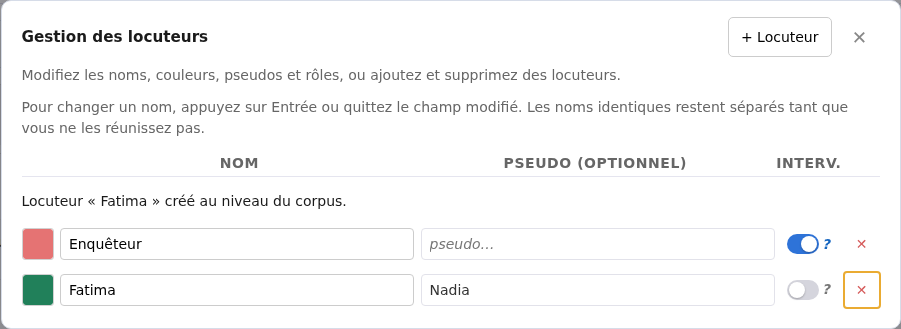
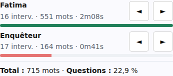
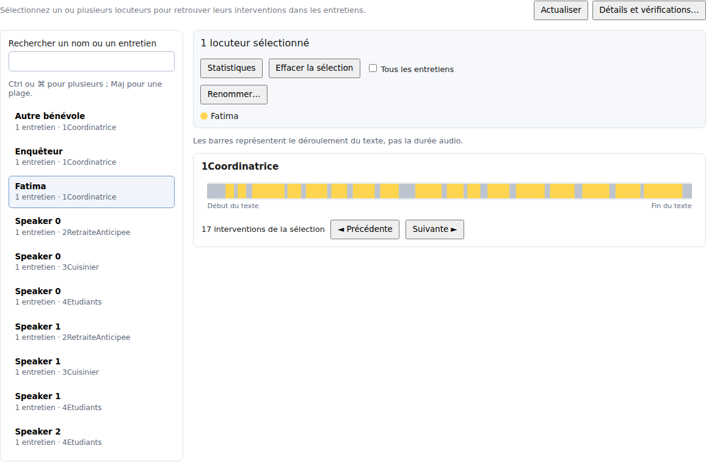
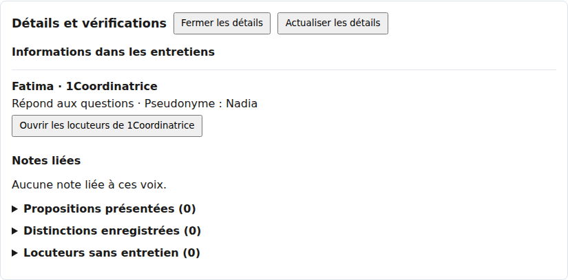

Importer et traiter
Identifier les locuteurs et les tours de parole
Les locuteurs indiquent qui parle dans un entretien. Après l’import, vérifiez les noms et l’attribution des passages : une transcription peut avoir confondu deux voix ou laissé une prise de parole sans nom.
Cette page décrit le travail dans un corpus local. Ouvrez l’entretien avec le crayon de sa carte, puis cliquez sur l’onglet Locuteurs à gauche de la transcription.
Pour essayer sans modifier votre enquête, utilisez une copie de Entretiens déjà importés, entretien 1Coordinatrice. Dans cet exemple fictif, Speaker 1 pose les questions et Speaker 0 est Fatima, la coordinatrice bénévole.
Renommer et ajouter les locuteurs
- Cliquez sur le crayon Modifier les locuteurs pour ouvrir la fenêtre de gestion.
- Dans la colonne Nom, remplacez le nom importé par un nom ou un libellé utile à votre enquête.
- Appuyez sur Entrée ou quittez le champ modifié avec Tabulation pour enregistrer le nom.
- En local, sur GitLab et sur Nextcloud, si ce locuteur est aussi présent dans d’autres entretiens, un aperçu s’ouvre avant toute modification. Vérifiez le Nouveau nom puis cliquez sur Renommer dans tous les entretiens, ou sur Annuler pour conserver les noms actuels. Sinon, le nom est enregistré directement.
- Vérifiez les noms affichés au-dessus des prises de parole dans la transcription.
Dans l’exemple, vous pouvez renommer Speaker 1 en Enquêteur et Speaker 0 en Fatima. Le nouveau nom apparaît au-dessus des paroles, sans remplacer les mots du texte. Renommer ne réunit jamais automatiquement deux locuteurs qui portent le même nom.
Si une voix manque, cliquez sur + Locuteur dans la fenêtre de gestion. Vous pouvez l’utiliser immédiatement et changer son nom quand vous le souhaitez. L’ajout ne lui attribue aucune parole : utilisez ensuite les boutons d’attribution décrits ci-dessous.
Toutes les voix apparaissent dans la vue Locuteurs du corpus, même avant leur premier renommage. Il n’y a pas d’étape « nom validé » à accomplir pour les consulter ou leur attribuer des paroles.
La petite case colorée à gauche du nom permet de choisir la couleur de ses libellés. La couleur aide au repérage, mais ne change ni le rôle ni l’attribution des paroles.

Indiquer qui pose les questions
Activez l’interrupteur de la colonne Interv., marqué d’un ?, pour la personne qui mène l’entretien. Ses prises de parole apparaissent en italique et son nom est suivi d’un point d’interrogation.
Le nom « Enquêteur » ne suffit pas à activer ce rôle. Vous n’avez pas non plus à ajouter vous-même un point d’interrogation au nom. Pour retirer le rôle, désactivez le même interrupteur.
Corriger l’attribution d’un passage
Utilisez les boutons sous Attribuer le bloc courant ou la sélection :, et non les champs de nom.
Pour un paragraphe entier
- Cliquez dans le paragraphe concerné, sans sélectionner de texte.
- Cliquez sur le bouton portant le nom du bon locuteur.
- Vérifiez le nom au-dessus de la prise de parole.
Ce geste ne réattribue pas automatiquement tous les autres paragraphes du même tour. Des paragraphes consécutifs attribués au même locuteur sont présentés comme un seul tour de parole : son nom n’est pas répété à chaque paragraphe.
Pour quelques mots ou plusieurs paragraphes
- Sélectionnez à la souris le passage prononcé par la personne.
- Cliquez sur son bouton d’attribution.
- Relisez le début et la fin de la sélection pour vérifier la séparation des voix.
La sélection est étendue aux mots entiers. Si vous attribuez seulement une partie d’un paragraphe, SonalPi la sépare du texte qui précède et qui suit pour pouvoir lui donner un autre locuteur. Les mots ne sont pas remplacés et les codages existants restent associés au texte.
Le bouton aucun retire l’attribution sur le paragraphe courant ou la sélection. Il conserve le texte et laisse le passage sans locuteur ; il ne supprime personne de la liste.
Comparer les prises de parole et les parcourir
- Dans l’onglet Locuteurs, ouvrez la section Statistiques des locuteurs.
- Consultez les nombres de tours et de mots de chaque locuteur, présentés du plus grand au plus petit nombre de mots. Les barres indiquent leur part des mots transcrits.
- Cliquez sur 🔎 Suivante sous une voix pour rejoindre sa première intervention, puis les suivantes. Après la dernière, vous revenez à la première ; le compteur indique votre progression.
- Repliez la section Statistiques des locuteurs pour fermer le bilan.
Un tour réunit les paragraphes consécutifs du même locuteur. Les paragraphes vides seuls ne comptent pas comme une intervention. Les passages Sans locuteur restent compris dans le total. La part des Enquêteurs regroupe les mots des personnes dont le rôle Interv. est activé, pas celles qui portent seulement ce nom.
Dans l’exemple, après avoir renommé les deux voix et indiqué le rôle de l’enquêteur, Fatima prononce 551 des 715 mots, soit 77,1 %. Il s’agit de la transcription, pas d’une mesure de l’occupation de l’enregistrement.

Les durées sont des estimations à partir des repères du texte. Les silences repérés entre deux passages ne sont pas attribués ; les pauses non repérées ne peuvent pas être isolées. Une durée partielle ne couvre qu’une partie des paroles. Un tiret indique qu’aucune durée ne peut être calculée ; ce n’est pas zéro seconde. Il ne s’agit pas d’une détection automatique des voix.
Le bilan reste consultable en lecture seule et sans enregistrement associé. Si un enregistrement est chargé et des repères sont disponibles, Suivante déplace aussi sa tête de lecture, sans démarrer une lecture arrêtée. Cette consultation ne change pas le texte et n’enregistre pas de nouveau contenu. Les noms affichés restent ceux des locuteurs : le bilan n’est pas pseudonymisé.
Retrouver les interventions dans le corpus
Revenez au Corpus par le fil de navigation, puis ouvrez l’onglet Locuteurs. La liste réunit les locuteurs déjà reconnus d’un entretien à l’autre. Les noms identiques restent distincts lorsqu’aucune association n’a été confirmée ; le titre de l’entretien aide à les distinguer.
- Sélectionnez un nom pour voir ses interventions dans les entretiens concernés.
- Utilisez Ctrl-clic (ou ⌘-clic sur Mac) pour sélectionner plusieurs noms ; Maj-clic sélectionne une plage de la liste.
- Recherchez un nom, une variante utilisée dans un entretien ou un titre d’entretien. Les lignes masquées par la recherche sont retirées de la sélection.
- Cliquez sur une intervention dans une barre, ou sur Suivante sous l’entretien, pour ouvrir le passage. Le retour au corpus conserve votre sélection.
Les barres représentent le déroulement du texte, du début à la fin : leur largeur n’est pas une durée audio. Les interventions sélectionnées sont colorées et les autres restent grises. L’option Tous les entretiens conserve aussi les entretiens où les locuteurs sélectionnés n’interviennent pas.
Le bouton Statistiques présente les nombres de mots et d’interventions de la sélection, avec un détail par locuteur. Une source indisponible est signalée et rend le bilan incomplet. Cette consultation ne modifie ni les paroles ni les associations.

Corriger les locuteurs sélectionnés
Les actions s’affichent après sélection dans un corpus modifiable, local ou partagé. Sur GitLab et Nextcloud, enregistrez et fermez les entretiens en édition avant de confirmer une correction. L’aperçu présente tous les entretiens concernés, même ceux masqués par la recherche. Annuler ou Échap ferme cet aperçu sans modification.
- Renommer… change le nom du locuteur et les noms dans tous ses entretiens associés. Saisissez le Nouveau nom, puis confirmez avec Renommer dans tous les entretiens.
- C’est le même locuteur… réunit plusieurs locuteurs sélectionnés. Choisissez le Nom commun, puis indiquez explicitement si les noms actuels des entretiens doivent être conservés ou remplacés par ce nom. Les cas fondés sur ces locuteurs suivront le locuteur réuni.
- Dissocier… rend chaque entretien coché indépendant. Laissez au moins un entretien sur le locuteur d’origine. Aucun nouveau nom n’est demandé et les noms actuels sont conservés : ce geste ne restaure pas d’anciens noms. Les cas fondés sur le locuteur d’origine ne sont pas étendus aux locuteurs dissociés.
Ces corrections conservent les paroles, notes, pseudonymes, rôles, couleurs et données. Après validation, la liste est actualisée et les locuteurs résultants sont sélectionnés. La recherche est effacée pour ne pas masquer le résultat.
Deux locuteurs présents dans le même entretien ne peuvent pas être réunis ici : ouvrez cet entretien pour corriger ses attributions. Un entretien indisponible ou un changement depuis l’aperçu empêche la correction ; fermez l’aperçu et actualisez la liste.
Si une ancienne entrée n’est pas encore reconnue dans le corpus, sélectionnez-la puis choisissez Conserver séparément…. Vérifiez les entretiens et confirmez : chaque voix présentée reste indépendante avec son nom actuel, même si deux noms sont égaux. Aucune voix ni parole n’est ajoutée dans les entretiens et les anciens liens retirés ne sont pas restaurés. Un nom vide doit d’abord être renseigné dans l’entretien. Vous pouvez ensuite renommer ces locuteurs ou les réunir avec les actions habituelles.
Consulter les détails sans quitter les interventions
Détails et vérifications… ouvre un panneau secondaire en conservant la liste et les interventions. Sélectionnez un ou plusieurs locuteurs pour retrouver leurs pseudonymes, rôles, données et notes, avec l’entretien d’origine. Les boutons Ouvrir les locuteurs de… et Ouvrir les notes de… rejoignent le bon entretien. Fermer les détails conserve votre sélection.

- Propositions présentées permet de Comparer ces locuteurs en les sélectionnant dans la liste. Utilisez ensuite C’est le même locuteur… pour les réunir après confirmation. Garder distincts… écarte la proposition sans créer ni réunir de locuteurs.
- Distinctions enregistrées permet de Réexaminer cette distinction…. La distinction est retirée dans les deux sens, mais les associations actuelles restent inchangées : rien n’est réuni automatiquement.
- Locuteurs sans entretien permet d’examiner les anciennes entrées qui ne sont plus utilisées. La suppression demande confirmation et reste impossible si un entretien est indisponible ou si un cas ou une distinction utilise encore le locuteur. Aucun texte ni aucune note ne sont supprimés.
Pour un locuteur présent dans plusieurs entretiens, Reprendre des informations… permet de choisir l’entretien source, puis le pseudonyme, le rôle et les données à copier. Par défaut, seules les informations manquantes sont complétées. Cochez explicitement le remplacement si vous voulez changer celles déjà renseignées. Noms, notes et associations ne changent pas ; les modifications futures ne sont pas recopiées.
Pour déplacer une seule voix d’un groupe vers un autre, dissociez d’abord l’entretien concerné, puis sélectionnez les locuteurs à réunir. Les anciens formulaires de création de fiche, de liaison et de séparation avec nouveau nom ne sont plus proposés. La consultation utilise la même vue sur les corpus distants. GitLab et Nextcloud proposent les corrections depuis le corpus, après fermeture des éditions. GitLab et Nextcloud permettent aussi le renommage global depuis l’entretien ouvert : vos dernières saisies sont enregistrées avant le changement de nom. La création au nommage et le rapprochement y sont également disponibles. Une création indépendante peut se faire pendant que d’autres entretiens sont modifiés ; un renommage global ou un rapprochement demande leur fermeture.
Sur Nextcloud, une interruption peut laisser une correction à terminer. Si elle vient d’un entretien ouvert, revenez au corpus, dans l’onglet Locuteurs. Le bilan distingue les étapes enregistrées et celles qui restent. Vérifier le résultat reconnaît ce que le serveur a reçu, sans nouvel envoi ; Reprendre la correction poursuit ensuite les étapes restantes. Si le résultat est connu, Arrêter cette correction… permet de conserver les étapes enregistrées sans appliquer la suite : cela ne rétablit pas les anciens noms ni les anciennes associations. Tant qu’un résultat reste inconnu, vérifiez-le avant de poursuivre.
Comprendre les rapprochements de personnes
Un locuteur appartient à un entretien. Une personne permet de retrouver un même participant dans plusieurs entretiens du corpus.
Dans un corpus local, GitLab ou Nextcloud, chaque nom non vide saisi crée un locuteur indépendant dans le corpus : « Enquêteur », « Participant 1 », « Inconnu » et « X » sont aussi acceptés. Aucune confirmation de création supplémentaire n’est nécessaire. Ensuite, si SonalPi repère un nom ou un rôle proche dans un autre entretien, il propose Une personne déjà rencontrée ? :
- Plus tard ou Échap conserve le locuteur déjà créé, visible et indépendant, sans appliquer le rapprochement proposé. Vous pourrez examiner la question dans l’onglet Locuteurs du corpus, puis Détails et vérifications….
- Si vous reconnaissez la même personne, sélectionnez la proposition et vérifiez les informations à reprendre avant de Confirmer. Les identités sont alors réunies, sans laisser une fiche vide ; les noms utilisés dans chaque entretien sont conservés. La reprise du pseudonyme et du statut est cochée par défaut ; décochez-la pour conserver vos informations locales.
- S’il s’agit de personnes différentes, choisissez Ce n’est pas cette personne ou Aucune de ces personnes. Le locuteur reste indépendant et les propositions écartées ne sont pas rétablies par un nouveau nom.
Un nom identique, et surtout un rôle comme « Enquêteur », ne prouve pas qu’il s’agit de la même personne. Si le locuteur est présent dans plusieurs entretiens, la confirmation du renommage change le nom dans tous ces entretiens, comme depuis le corpus. Elle ne le rapproche pas automatiquement d’un autre locuteur qui porterait ce nom.
Le texte courant est sauvegardé avant la correction. L’entretien reste ouvert, avec votre texte, vos notes et ses réglages conservés. Si la vérification finale est impossible, il reste temporairement en lecture seule : rouvrez le corpus avant de poursuivre les modifications.
Ajouter ou consulter une entrée ne réunit jamais les homonymes. Si vous aviez volontairement retiré un lien avec les autres entretiens, un nouveau nom ne le rétablit pas automatiquement. Un entretien indisponible diffère les propositions et empêche leur confirmation, mais n’empêche pas la création d’un locuteur indépendant dans l’entretien courant. Ce nommage automatique est disponible en local, sur GitLab et sur Nextcloud.
Utiliser le champ Pseudo avec prudence
La colonne Pseudo (optionnel) permet d’ajouter un pseudonyme au libellé de la prise de parole. Quittez le champ pour appliquer la saisie : le nom apparaît barré, suivi du pseudonyme entre crochets. Videz le champ pour retirer ce pseudonyme.
Ce champ ne pseudonymise pas la transcription. Le nom d’origine reste conservé et visible dans l’éditeur. Les mentions du nom dans les phrases, les autres informations sensibles et l’enregistrement ne sont pas modifiés. Ce réglage ne suffit donc pas à préparer une diffusion anonyme.
Supprimer un locuteur
Si deux entrées désignent la même voix, attribuez d’abord les passages de l’entrée en trop au locuteur à conserver. Supprimez ensuite seulement l’entrée devenue inutile.
- Cliquez sur la croix à droite du locuteur à supprimer.
- S’il possède encore des paroles, SonalPi indique le nombre de blocs concernés. Cliquez sur Annuler pour garder le locuteur, ou sur Supprimer pour confirmer.
- Vérifiez les passages concernés dans la transcription.
Un locuteur sans parole attribuée est supprimé immédiatement, sans confirmation. Vider son nom n’est pas la commande de suppression.
Supprimer un locuteur n’efface pas ses paroles. Elles passent à « aucun » et doivent être réattribuées si vous voulez conserver l’identification de la voix. Ses liens aux notes sont retirés ; les notes elles-mêmes et l’éventuelle fiche de personne du corpus ne sont pas supprimées. Considérez cette suppression comme définitive, ainsi que l’indique la confirmation.
Conserver et vérifier le résultat
Les modifications sont enregistrées automatiquement dans le corpus local. Attendez à jour en haut de la fenêtre, puis revenez au Corpus par le fil de navigation. Rouvrez l’entretien pour retrouver les noms, les réglages et les attributions.
La transcription d’origine n’est pas réécrite. Pour poursuivre, vous pouvez relire le texte en écoutant l’enregistrement ou coder un premier passage avec un thème.